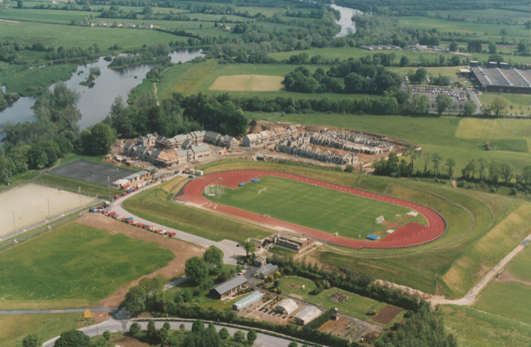
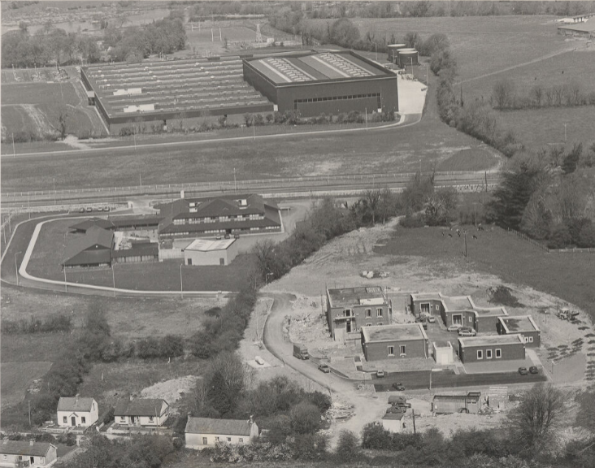
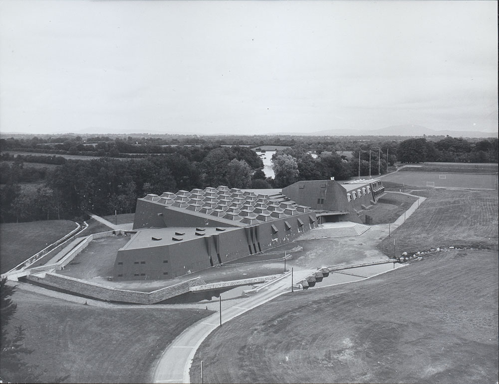
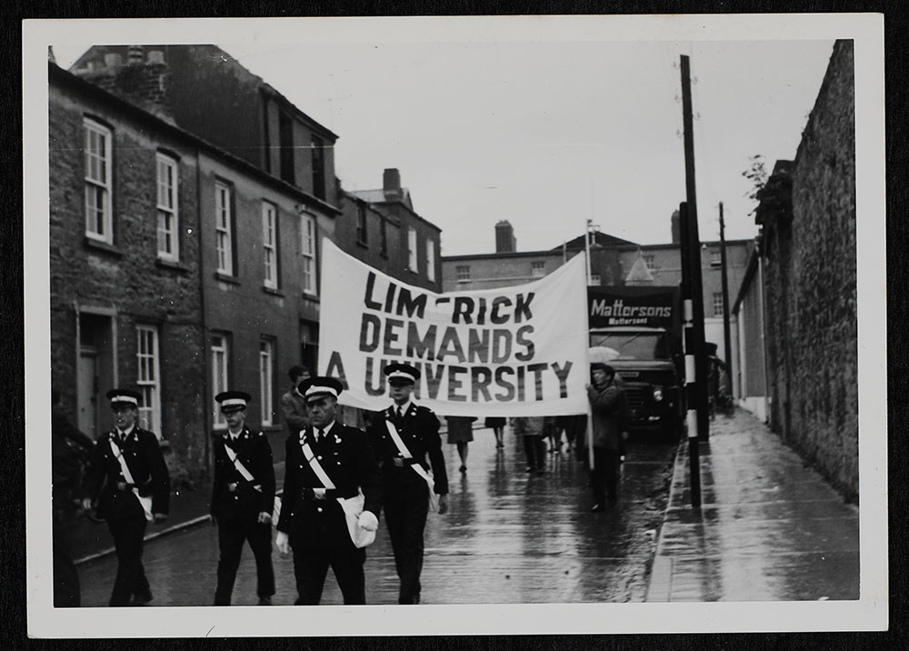

University of Limerick is a public research university in Limerick, Ireland. Founded in 1972, as the National Institute for Higher Education, Limerick, it became a university in September 1989 . It was the first university established since Irish independence in 1922, followed by the establishment of Dublin City University.

Construction of student accomodation.



The founding of UL was demanded by the population of limerick and surrounding counties.
UL is one of the fastest growing universities in Ireland, it's growth is spured on by a growing international student base as well as a one of a kind COOP placement system.